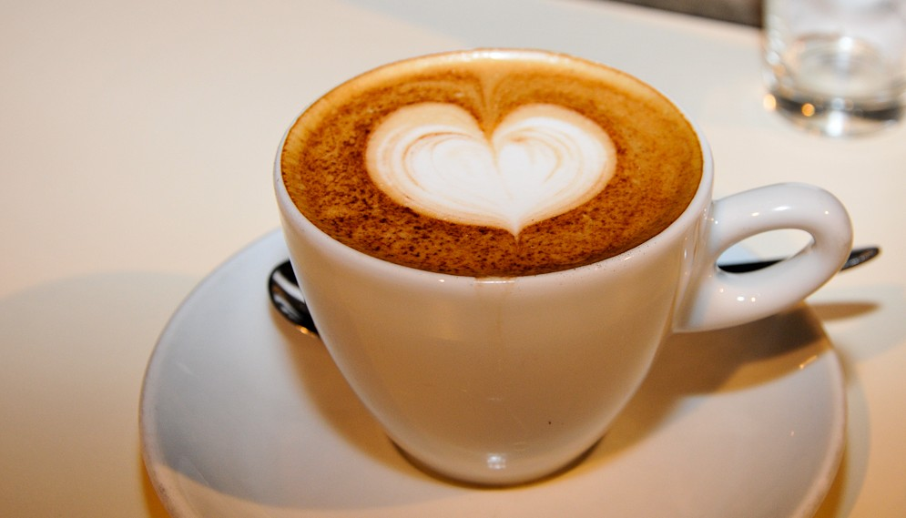

Cappuccino

Caffè Latte

Expresso
Cappuccino
Caffè Latte
Expresso
Herzlich Willkommen in unserer Kaffeewerkstatt Wir sind Kaffeehus – eine kleine, feine Rösterei und Kaffeebar aus den norden, in der Leidenschaft und Handwerk im Mittelpunkt stehen. Hier dreht sich alles um echten Kaffee, handgemacht mit Liebe zum Detail.
Unser Handwerk
• Hausrösterei Wir rösten unsere Bohnen selbst – schonend und in
kleinen Chargen für optimalen Geschmack
• Traditionelle Zubereitung Ob Siebträger, Filter oder French Press
– wir beherrschen die klassischen Methoden perfekt
Kommen Sie vorbei und erleben Sie Kaffee, wie er sein soll.
☕ Täglich frisch geröstet
🕒 Öffnungszeiten: Mo-Fr 7-18 Uhr | Sa 8-16 Uhr
📍 Bei uns in der Altstadt, Kaffeegasse 7